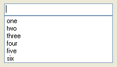
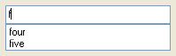

(list = false, width = 20, status = "", readonly = false,
mandatory = false, allowOther = false)
Similar to ChooseListControl but the list drops down automatically and only shows entries that match what you have typed.
 You can use the up and down arrow keys to move through the choices and the ENTER key to choose one. The ESC key will close the list and the up and down arrows will open it.
See also: MultiAutoChooseControl